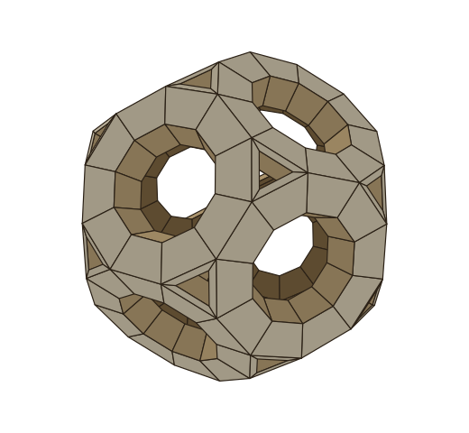
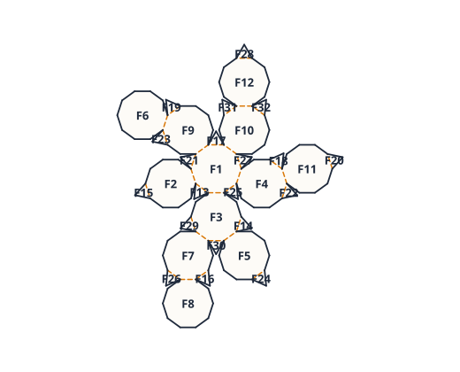

P-02.08 · Truncated Dodecahedron¶
Dodecahedron Abscisum Decagonale · Field: :math:`mathbb{Q}(phi)` · Symmetry: :math:`I_h` (order 120) · Convex · Archimedes / Piero
Ex dodecaedro si anguli viginti ita resecentur ut relinquatur decagonum regulare, prodibit corpus Archimedeum triginta duarum basium.
If from the dodecahedron the twenty corners are so cut that a regular decagon remains, there will result an Archimedean body of thirty-two bases.
—Johannes Kepler, Harmonices Mundi, Lib. II (Linz, 1619)
Interactive 3D Studio¶
Note
Interactive Studio Controls:
Display Modes: Switch between Surfaces (studio-lit polygonal facets), Wireframe (depth-cued structural edges), and Frame (mitered hollow beam manifold).
Opacity & Aperture Sliders: Adjust surface transparency from
0%to100%in Surfaces and Frame modes, and tune the window Aperture in Frame mode.Vertices, Dual & Golden φ: Toggle Vertices (default ON), Dual (the face-center dual whose vertices are the exact centers of the sides), and Golden φ (\(\phi : 1\) golden sections and \(1 : \phi\) golden rectangles).
Machine-Verified Symbolic Certificate¶
Mathematical Invariant |
Exact Symbolic Value |
Geometric Interpretation |
|---|---|---|
Catalog Identifier |
|
Family 02 (Archimedean Solids), Solid 08 |
Algebraic Number Field |
\(\mathbb{Q}(\phi)\) |
Golden ratio field \(\phi = \frac{1+\sqrt{5}}{2}\) |
Topology |
\((V=60, E=90, F=32)\) |
Euler characteristic \(\chi = 60 - 90 + 32 = 2\) |
Face Composition |
20 equilateral triangles + 12 regular decagons |
Vertex figure \(3 \cdot 10^2\) |
Exact Edge Quadrance \(Q_E\) |
\(\frac{6 - 2\sqrt{5}}{5} = \frac{4\phi^{-2}}{5}\) |
Edge length \(s = \frac{\sqrt{5}-1}{\sqrt{5}} = 1 - \frac{\sqrt{5}}{5}\) |
Exact Circumquadrance \(Q_{\text{out}}\) |
\(\frac{9 + 2\sqrt{5}}{5}\) |
Circumradius \(R = \sqrt{\frac{9+2\sqrt{5}}{5}} \approx 1.6415\) |
Primary Dihedral Spread \(s\) |
\(4/5\) |
Decagon-to-decagon dihedral spread: identical to regular dodecahedron |
Vacuum Manifold |
\((V=480, E=1080, F=540)\) |
Genus \(g = F - 1 = 31\), \(\chi = -60\) |
Polar Dual |
Triakis Icosahedron |
Catalan solid with 60 isosceles triangular faces |
Symmetry Group |
\(I_h\) (order 120) |
Full icosahedral chiral and reflection group |
Historical Canon |
Archimedes of Syracuse; Piero della Francesca (1482) |
Johannes Kepler, Harmonices Mundi (1619), Lib. II |
Exact Coordinate Representative Ledger & Algebraic Construction¶
Canonical Golden Coordinates¶
In the GEOMETOR formulation, the 60 vertices of the truncated dodecahedron are generated by applying the golden truncation depth \(t = \frac{3 - \phi}{5}\) to the twenty vertices of the regular dodecahedron:
Symmetry Orbit |
Exact Coordinate Generator |
Number of Vertices |
|---|---|---|
Orbit A (ridge) |
$(0, \pm \phi^{-1}/5, \pm (5\phi-1)/5)$ and cyclic permutations |
12 vertices |
Orbit B (cube corner cut) |
$(\pm 1, \pm (\phi+2)/5, \pm (3\phi-1)/5)$ and cyclic permutations |
24 vertices |
Orbit C (face boundary) |
$(\pm \phi, \pm 2\phi^{-1}/5, \pm (2\phi+1)/5)$ and cyclic permutations |
24 vertices |
Every vertex has exact circumquadrance:
All 90 edges have uniform exact quadrance \(Q_E = \frac{6 - 2\sqrt{5}}{5}\), ensuring that each of the twelve 10-sided faces is a regular Euclidean decagon.
Hollow Frame Manifold¶
The hollow armillary representation displays the intricate geometry of twelve large decagonal portals interconnected by twenty small triangular corner frames:


Exact Symbolic Reconstruction: Open wooden beam lattice (\(\mu = 0.25\)) of genus \(g = 31\) and Euler characteristic \(\chi = -60\).¶
First reconstructed in the Renaissance by Piero della Francesca in his treatise De Quinque Corporibus Regularibus (c. 1482), this body was later rediscovered and systematized by Johannes Kepler in 1619.
Unfolded 2D Papercraft Net¶
The truncated dodecahedron unfolds into the Euclidean plane along 59 cut edges into a rosette of twelve regular decagons and twenty equilateral triangles:


2D Dihedral-Hinge Unfolding: Thirty-two regular polygons joined along 31 internal hinges (dashed lines) and 88 boundary cut edges (solid lines).¶